拘束条件(Constraint)
前回までで剛体同士の衝突について学んだが，
もう一つ物理エンジンを使ってアプリケーションを構築する上で重要となる要素がある．
それは「拘束条件」(Constraint)である．
例えば，ドアの開閉をシミュレーションしたい場合，ドアは壁に蝶番で固定されている．
ただし，ドアを蝶番を軸として回転する方向のみに自由に動くことができる
(このように動ける方向/回転が1つだけのとき自由度が1であるという)．
この場合，壁とドアの位置関係は蝶番を中心として固定されているが，
回転方向のみ自由度があるという拘束条件が課されている．
ドアだけでなく，人間の関節，車のタイヤと車体，窓やふすまの開閉など
位置関係を固定してある軸周りの回転だけを許したり，
回転はしないがある方向のみにスライドして動くことができるといった機構が数多く存在する．
これらは物理シミュレーションでは拘束条件(Constraint)と呼ばれ，その機構部分をジョイント(Joint)と呼ぶ．
前回行った剛体の衝突も衝突により物体表面法線方向の移動が制限されると考えると，
拘束条件の一つといえる．この場合のジョイントは衝突点となる．
多くの物理エンジンでは拘束条件を記述する拘束方程式を解くConstraint-based methodを用いている．
まず，拘束条件を という形で表現する．
例えば，2つの物体の単純な衝突の場合，
めり込みが発生しないとするとそれぞれの物体での衝突点座標
という形で表現する．
例えば，2つの物体の単純な衝突の場合，
めり込みが発生しないとするとそれぞれの物体での衝突点座標 )
の間の関係は，
)
の間の関係は，
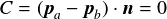
と表される．ここで，は衝突点の法線方向を示し，
両物体の法線方向の位置関係が固定されることを意味する．
このとき， を拘束条件を表す式として定義する．
を拘束条件を表す式として定義する．
拘束条件を解決するためには，を満たすように各オブジェクトに力を加える必要がある．
拘束条件を保つための力を求める式を導出するために，
より単純な例として下図のように物体(黒丸)の動きが原点を中心とした半径1の円上に制限されている場合を考える
(ブランコのような動き)．

動きを円形状に制限した場合
黒丸の中心位置を とすると拘束条件は，
とすると拘束条件は，
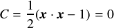
となる．ここで1/2はこの後の計算式を簡単化するためにつけた係数である．
括弧の中が0となるので1/2倍しても拘束条件としてはなり立っている．
C=0なのでその時間微分 ，2階微分も0となる．
これを式にすると，
，2階微分も0となる．
これを式にすると，

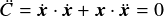
ここで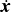は速度，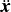は加速度になっている．
さて，物体にかかる力を とし，に加えて，
拘束条件を満足させるためにかける力を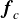とすると，
物体の加速度は運動方程式より，
とし，に加えて，
拘束条件を満足させるためにかける力を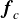とすると，
物体の加速度は運動方程式より，

ここでmは物体質量である．
これを先ほどの式に代入する．
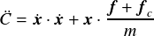
について解く．
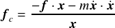
そして，スカラー値となる項をまとめて とすると，
とすると，

となり，この式でを計算して，先ほどの運動方程式から加速度，そして速度を更新すれば拘束条件を解くことができる．
ただし，上の式はあくまで円状に運動するように拘束された剛体の場合の式であるので，より一般化してみよう．
は拘束条件Cの空間微分になっている(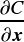)ので，
Cの空間微分をJacobianを使って と表すと，
他の拘束条件も含めた一般化した式が得られる．
と表すと，
他の拘束条件も含めた一般化した式が得られる．
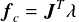
この式は拘束条件を解消するための力は拘束条件Cを空間微分した方向に 倍したものになるということを意味する．
さて，今，単位時間あたりの仕事量(ワット)を考える．仕事(ジュール)は力と距離をかけたものであり，
これを時間あたりで考えると仕事量は力と速度をかけたものになる．拘束点における単位時間あたりの仕事量を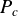とすると，
倍したものになるということを意味する．
さて，今，単位時間あたりの仕事量(ワット)を考える．仕事(ジュール)は力と距離をかけたものであり，
これを時間あたりで考えると仕事量は力と速度をかけたものになる．拘束点における単位時間あたりの仕事量を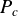とすると，

いまエネルギー保存の法則により衝突前後では物体のエネルギーは増減しないはずなので となる．
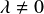なので，
となる．
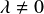なので，

これが拘束方程式である．なお， でもある(上記の
でもある(上記の も満たしているということに注意)．
Bulletでは複数の拘束条件が存在した場合にも対応できるソルバとして，
PGS(Projected Gauss Seidel constraint solver)を用いて，
上記の拘束方程式を解くことで拘束条件を満足するための力を各剛体に付加している．
しかし，多数の剛体があると厳密に解くのは難しくなってくる．
そのためにある程度の弾力性を許すことで計算を安定化させる手法が用いられている．
そのような方法の一つであるCFMとERPについて次節で解説する．
も満たしているということに注意)．
Bulletでは複数の拘束条件が存在した場合にも対応できるソルバとして，
PGS(Projected Gauss Seidel constraint solver)を用いて，
上記の拘束方程式を解くことで拘束条件を満足するための力を各剛体に付加している．
しかし，多数の剛体があると厳密に解くのは難しくなってくる．
そのためにある程度の弾力性を許すことで計算を安定化させる手法が用いられている．
そのような方法の一つであるCFMとERPについて次節で解説する．
Soft Constraint
拘束条件を厳密に満たすようにするならば，拘束方程式 をそのまま満たすようなを使えばよいが，
多くのオブジェクトが存在するシーンではこれは難しい．
厳密に解こうとすると巨大な行列の逆行列を計算したり，多くの反復計算が必要になる．
そこで，多くの物理エンジンではある程度のずれを許すことで，
安定して高速に拘束条件を解いている．
これはSoft Constraint(柔らかい拘束)と呼ばれる方法で，
ちょうど前回やったPenalty-based methodと同じようにある程度のめり込みや拘束点でのずれを許してしまう方法である．
BulletやODE(Open Dynamics Engine)ではCFM(Constraint Force Mixing)とERP(Error Reduction Parameter)をいう仕組みにより，
Soft Constraintを実現している．
具体的には，拘束方程式を以下のように書き換える．
をそのまま満たすようなを使えばよいが，
多くのオブジェクトが存在するシーンではこれは難しい．
厳密に解こうとすると巨大な行列の逆行列を計算したり，多くの反復計算が必要になる．
そこで，多くの物理エンジンではある程度のずれを許すことで，
安定して高速に拘束条件を解いている．
これはSoft Constraint(柔らかい拘束)と呼ばれる方法で，
ちょうど前回やったPenalty-based methodと同じようにある程度のめり込みや拘束点でのずれを許してしまう方法である．
BulletやODE(Open Dynamics Engine)ではCFM(Constraint Force Mixing)とERP(Error Reduction Parameter)をいう仕組みにより，
Soft Constraintを実現している．
具体的には，拘束方程式を以下のように書き換える．
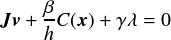
ここでhはタイムステップ幅である(ODEでの説明に合わせて ではなくhにしてある)．
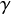を含む項がCFM，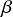を含む項がERPであり，
CFM()は先ほどの拘束を満たすための力の大きさに対して係数をかけることで柔らかい拘束を実現している．
一方，ERP()については，拘束条件Cからのずれ(誤差)を修正するような力をかけるためのパラメータである
(誤差(error)を減少させる(reduction))．
それぞれ，ばね定数
ではなくhにしてある)．
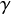を含む項がCFM，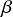を含む項がERPであり，
CFM()は先ほどの拘束を満たすための力の大きさに対して係数をかけることで柔らかい拘束を実現している．
一方，ERP()については，拘束条件Cからのずれ(誤差)を修正するような力をかけるためのパラメータである
(誤差(error)を減少させる(reduction))．
それぞれ，ばね定数 と減衰係数
と減衰係数 を使って，
を使って，
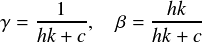
と表される．この定義はODEのものであるが，Bulletでも同様のものが使われている．
Bulletではこちらが明示的に指定しないでもCFMとERPは自動的に適切な値が設定される．
自分で設定したい場合は，各拘束を設定した後，setParam関数を使って指定する．
btTypedConstraint::setParam(int num, btScalar value, int axis = -1)
numには，
BT_CONSTRAINT_ERP
BT_CONSTRAINT_STOP_ERP
BT_CONSTRAINT_CFM
BT_CONSTRAINT_STOP_CFM
のいずれかを指定し，値はvalueに指定する．
ERPは[0,1]の範囲で値を設定し，CFMが0ならば完全にHardなジョイント，
正で0でない値ならSoftなジョイントとなる．
BulletでのConstraint設定方法
拘束条件の種類ごとにクラスが設定されている．
必要な拘束条件(ジョイント)を設定したクラスのオブジェクトを生成した後，
btDynamicWorldのaddConstraintメンバ関数を使って
ワールドにその拘束条件を追加してやればよい．以下のコードはbtPoint2PointConstraintを追加した例である．
btPoint2PointConstraint *constraint = new btPoint2PointConstraint(*body, pos);
g_dynamicsworld->addConstraint(constraint, true);
bodyは拘束条件を追加する剛体(btRigidBody)，posは拘束点(ジョイント)の位置である．
このようにして拘束条件を追加したら，CleanBullet関数などでConstraintを破棄するのも忘れずに．
破棄する場合のコード例は以下．
// 拘束条件の破棄
for(int i = g_dynamicsworld->getNumConstraints()-1; i>=0 ;i--){
btTypedConstraint* constraint = g_dynamicsworld->getConstraint(i);
g_dynamicsworld->removeConstraint(constraint);
delete constraint;
}
詳しくはBulletのApp_BulletExampleBrowserの"Constraints"を参照してほしい．
以下では，Bulletで使うことができるジョイントについてそれぞれ簡単に説明する．
なお，このページでは文章のみによる説明であるが，
ジョイントの機構を画像で直感的に知りたい人は，
ODEの説明ページ
を参考にしてほしい．
また，BulletデモのConstraintDemoでは様々な拘束条件が設定されているので，
自分で実装する際には参考にしよう．
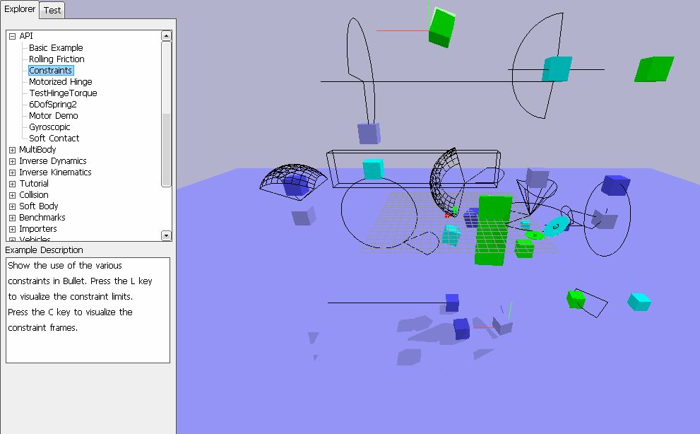
Constraintsの実行画面
練習問題1
好きな形状のbtRigidBodyを用意して，下記のジョイント(Contact Constraintは除く)をいくつか設定して試してみよう．
例として，以下に2つの立方体形状の剛体body1とbody2を作成し，btPoint2PointConstraintでbody1を空間中に，
body1とbody2を頂点で接続したときのコードと結果画像を示す．なお，立方体の辺の長さの半分をHALF_EXTENTとしている．
// ジョイントの設定
// body1を空間上にPoint to Point Constraintで固定
btVector3 pivot0(-HALF_EXTENT, -HALF_EXTENT, -HALF_EXTENT); // body1の接続点(相対座標)
btTypedConstraint *joint01 = new btPoint2PointConstraint(*body1, pivot0);
g_dynamicsworld->addConstraint(joint01);
// body1とbody2をPoint to Point Constraintで接続
btVector3 pivot1( HALF_EXTENT, HALF_EXTENT, HALF_EXTENT); // body1の接続点(相対座標)
btVector3 pivot2(-HALF_EXTENT, HALF_EXTENT, HALF_EXTENT); // body2の接続点(相対座標)
btTypedConstraint *joint12 = new btPoint2PointConstraint(*body1, *body2, pivot1, pivot2);
g_dynamicsworld->addConstraint(joint12);

2つの剛体にPoint to Point Constraintを設定した例
練習問題2
練習問題1で設定したbtPoint2PointConstraintで大きな力で引っ張ったときに接続が切れる様に設定してみよう．
接続が切れるかどうかの判定のために，Constraintにかかる力をBulletから取得する必要がある．
Constraintにかかる力を取得するための前準備として，まず，Constraint定義時に以下のようにして，JointFeedbackを設定しておく．
joint12->enableFeedback(true);
btJointFeedback *feedback = new btJointFeedback();
joint12->setJointFeedback(feedback);
g_constraint = joint12;
ここでjoint12は練習問題1で設定したConstraintであり，
g_constraintは他の関数でこのConstraintの情報を得るために定義したbtTypedConstraint*型のグローバル変数である
(main.cppの最初の方で定義しておこう)．
これでConstraintにかかる力の取得のための準備ができたので，あとはTimer関数などで，
実際にかかっている力を取得して，それが一定値以上ならConstraintを削除する処理を行えば良い．
力の取得のコード例を以下に示す．
if(g_constraint){
btJointFeedback *f = g_constraint->getJointFeedback();
// Constraintを構成する2つのオブジェクトにそれぞれConstraintから働いている力を取得する
btVector3 force1 = f->m_appliedForceBodyA;
btVector3 force2 = f->m_appliedForceBodyB;
// 所得した力はベクトルなので，ベクトルの大きさ(norm)を基準に接続を切るかどうかを判定
if(force1.norm() > 1000.0 || force2.norm() > 1000.0){
// ここにConstraintを削除する処理を記述
}
}
Constraintの削除は上記説明「BulletでのConstraint設定方法」を参照してほしい．
この例では変数g_pContraintが0かどうかで破棄するためのチェックをするかどうかを判断しているので，
変数の定義時および削除した後にg_pContraint = 0と初期化しておいた方が安全(環境によっては自動的に0で初期化してくれる場合もあるけど)．
BulletでのConstraintの種類
Point to Point Constraint
btPoint2PointConstraint(
btRigidBody& rbA,
btRigidBody& rbB,
const btVector3& pivotInA,
const btVector3& pivotInB
)
剛体が点で接続されて，回転などは自由に行われるジョイントである．
ボールとソケットによるジョイントとも呼ばれる．
接続する2つのbtRigidBodyを指定するほかに，
それぞれのオブジェクトのローカル座標における接続点(pivotInAとpivotInB)も指定する．
また，btRigidBodyを1つだけ指定してそれを空間中に点に固定するという指定も可能である．
btPoint2PointConstraint(
btRigidBody& rbA,
const btVector3& pivotInA,
)
この場合のpivotInAもオブジェクト(rbA)のローカル座標における点の座標値を用いることに注意．
なお，実験のサンプルプログラム(btcube)のマウスドラッグによる物体移動でもbtPoint2PointConstraintを用いている．
そちらについて詳しく知りたい場合は，こちらのページを参照してほしい．
Hinge Constraint
btHingeConstraint(
btRigidBody& rbA,
btRigidBody& rbB,
const btVector3& pivotInA,
const btVector3& pivotInB,
const btVector3& axisInA,
const btVector3& axisInB,
bool useReferenceFrameA = false
)
ドアの蝶番や車のタイヤの回転のように1つの軸周りの回転のみを許すジョイント
pivotInAとpivotInBはそれぞれのオブジェクトのローカル座標における接続点(軸の中心)であり，
axisInAとaxisInBにはそれぞれのローカル座標における軸の向きを指定する
(グローバル座標では1つの軸に一致するようになることに注意)．
useReferenceFrameAはどちらのオブジェクトを相対姿勢を求める際の基準にするかを指定するための引数である．
enableAngularMotorメンバ関数を使うとモータによる回転も追加できる．
Hinge2 Constraint
btHinge2Constraint(
btRigidBody& rbA,
btRigidBody& rbB,
btVector3& anchor,
btVector3& axis1,
btVector3& axis2
)
Hinge Constraintに近いが，こちらは直交した2つの軸を設定できる．
例えば車のフロントタイヤは進行方向に進むための回転の他に，
ハンドルを回すことで進行方向自体を変えるための回転の2つの回転の組み合わせでできている．
さらにタイヤについたショック吸収用のバネを再現するために1軸方向の平行移動もできる
(合計3自由度)．
anchorはジョイントのローカル座標を設定する際の基準となる点，axis1とaxis2に2つの軸を設定する．
これらはbtHingeConstraintと違いすべてグローバル座標(ワールド座標)での値であることに注意．
anchorは1つだけ設定し，それぞれのオブジェクトは初期状態でのanchorからの相対座標値の場所に固定される．
注意としてaxis1とaxis2は直交するように設定すること．
車の前輪の場合で考えるとaxis1はハンドル，axis2がタイヤの回転軸となる．
Slider Constraint
btSliderConstraint(
btRigidBody& rbA,
btRigidBody& rbB,
const btTransform& frameInA,
const btTransform& frameInB,
bool useLinearReferenceFrameA
)
設定した方向のみしか動くことができないジョイント．
frameInAとframeInBには何も力がかかっていない状態での相対位置/姿勢を与える．
useReferenceFrameAはどちらのオブジェクトを相対姿勢を求める際の基準にするかを指定するための引数である．
基準となるオブジェクトのローカル座標におけるx軸方向の移動のみに制限される．
Cone Twist Constraint
btConeTwistConstraint(
btRigidBody& rbA,
btRigidBody& rbB,
const btTransform& rbAFrame,
const btTransform& rbBFrame
)
人間の肩の関節のように，ある角度の範囲内で回転するジョイント．
ぬいぐるみの間接などによく用いられているため ragdollジョイントとも呼ばれる．
Hinge2のような2軸周りの回転に加えて，ひねるような回転も加えた3自由度のジョイントである．
rbAFrameとrbBFrameには何も力がかかっていない状態での相対位置/姿勢を与える．
rbAFrameとrbBFrameで与えた相対位置関係からローカルなx,y,z軸を生成し，
それぞれの軸周りの回転可能な角度をsetLimitメンバ関数を使って指定する．
setLimit関数は，
void setLimit(btScalar _swingSpan1,
btScalar _swingSpan2,
btScalar _twistSpan,
btScalar _softness = 1.f,
btScalar _biasFactor = 0.3f,
btScalar _relaxationFactor = 1.0f)
と定義されており，swingSpan1はローカルz軸周り，swingSpan2はローカルy軸周り，twistSpanはローカルx軸周り(ひねり)の回転可能な角度(rad)を指定する．
Gear Constraint
btGearConstraint(
btRigidBody& rbA,
btRigidBody& rbB,
const btVector3& axisInA,
const btVector3& axisInB,
btScalar ratio = 1.f
)
歯車のように2つの剛体がある決まった比率の角速度で回転するジョイント．
2つの回転軸(axisInA, axisInB)と角速度の比率(ratio)を指定する．
Universal Constraint
btUniversalConstraint::btUniversalConstraint(
btRigidBody& rbA,
btRigidBody& rbB,
const btVector3& anchor,
const btVector3& axis1,
const btVector3& axis2
)
Point to Point Constraintと同様に1点で剛体が拘束される．
ただし，回転できる軸を2つ設定する(ただし，2軸は直交している)．
anchorはジョイントのローカル座標を設定する際の基準となる点，axis1とaxis2に2つの軸を設定する．
anchorは基準としたいオブジェクトの位置を使えばよい．
これらはすべてグローバル座標値で指定する．
注意としてaxis1とaxis2は直交するように設定すること．
Generic 6 DOF Constraint
btGeneric6DofConstraint(
btRigidBody& rbA,
btRigidBody& rbB,
const btTransform& frameInA,
const btTransform& frameInB,
bool useLinearReferenceFrameA
)
x,y,z軸方向の平行移動とx,y,z軸周りの回転に対する制限を設定できるジョイント．
(DOFはDegree Of Freedomの略で日本語だと自由度)．
frameInAとframeInBには何も力がかかっていない状態での相対位置/姿勢を与える．
useLinearReferenceFrameAはどちらの物体を相対位置を求める際の基準にするかを指定するための引数である．
x,y,z軸方向の平行移動に対する制限は，
setLinearLowerLimit,setLinearUpperLimitメンバ関数，
x,y,z軸周りの回転に対する制限は，
setAngularLowerLimit,setAngularUpperLimitメンバ関数を使って指定する．
これまで述べたすべてのジョイントはこの6DOFジョイントを使えば再現可能である．
Generic 6 DOF Constraint with Springs
btGeneric6DofSpringConstraint(
btRigidBody& rbA,
btRigidBody& rbB,
const btTransform& frameInA,
const btTransform& frameInB,
bool useLinearReferenceFrameA
)
Generic 6 DOF Constraintにバネを追加したものであり，
力をかけなければ初期状態に戻ろうとする．
パラメータや制限の指定方法はGeneric 6 DOF Constraintと同じ．
バネのON/OFFはenableSpringメンバ関数，バネの強さはsetStiffnessメンバ関数を使って指定する．
Contact Constraint
btContactConstraint(
btPersistentManifold* contactManifold,
btRigidBody& rbA,
btRigidBody& rbB
)
通常の衝突によるConstraint．剛体同士が衝突したときに互いがめり込まないような拘束を与える．
こちらが指定しなくても自動的に生成される拘束条件．
練習問題3
btHingeConstraintを使って，4つのタイヤを持つ車を再現してみよ．
なお車のボディはボックス形状，タイヤには円筒(btCylinderShape)形状を用いること．
さらに，btHingeConstraintにモータを設定して，矢印の上下キーで前進/後退ができるようにしてみよ．
注意点を以下にあげる．
-
btCylinderShapeは初期状態ではy方向を軸とする向きなので，
回転させるかbtCylinderShapeXを用いるとよい．
Constraintを設定するときは軸や接続点の座標はそれぞれのローカル座標になることに注意しよう．
-
矢印キーをGLFWで扱う場合は，Keyboard関数内のkeyによるswitch処理にGLFW_KEY_UPやGLFW_KEY_DOWN
指定時の処理を追加すれば良い．
例えば，
void Keyboard(GLFWwindow* window, int key, int scancode, int action, int mods)
{
if(ImGui::GetIO().WantCaptureKeyboard) return; // ImGUIウィンドウ上でのキーボードイベント時
if(action == GLFW_PRESS){
switch(key){
// デフォルトのキー設定
・・・
case GLFW_KEY_UP: // 上矢印キーが押されたときの処理
g_fTargetVelocity += 10.0; // 目標角速度の増減[deg/s]
break;
case GLFW_KEY_DOWN: // 下矢印キーが押されたときの処理
g_fTargetVelocity -= 10.0; // 目標角速度の増減[deg/s]
break;
}
}
}
-
btHingeConstraintにモータを設定する場合は，enableAngularMotorメンバ関数でモータを有効にする必要がある．
joint1->enableAngularMotor(true, btRadians(90.0), 1.0);
この例では角速度として毎秒90度の回転になるように設定している．
一つ目の引数をtrueにすることでモータを有効にし，二つ目の引数でモータの角速度[rad/秒]を設定，
三つ目の引数は最大インパルスでこれが0だと動かなくなるので0より大きい数を設定する．
モータの角速度を途中で変更するには，
joint1->->setMotorTargetVelocity(btRadians(g_fTargetVelocity));
とすればよい．
joint1をグローバル変数として，Keyboard関数でg_fTargetVelocityの値を増減すれば前進/後退をシミュレーションできる．

4つの車輪を持つ車の例1
練習問題4
練習問題3で作成した車の前輪をbtHinge2Constraintに置き換えて，
矢印の左右キーを使ってハンドル操作もできるようにしてみよう．
注意点を以下にあげる．
-
前輪にbtHinge2Constraint,後輪にbtHingeConstraintを設定，btHinge2Constraintのタイヤの左右の最大回転量(ハンドル)はsetLowerLimit,setUpperLimit，
上下の平行移動量(バネ)はsetLinearLowerLimit,setLinearUpperLimitで設定できる
-
左右キーの設定は練習問題3と同様なのでそちらを参照(左右キーの指定はGLFW_KEY_LEFTとGLFW_KEY_RIGHT)．
-
btHinge2Constraintにモータを設定する場合は，getRotationalLimitMotorメンバ関数でモータを取得して，
有効化(m_enableMotor = true)，回転速度(角速度 : rad/sec)の設定(m_targetVelocity)，を行う．
btRotationalLimitMotor2 *motor1;
motor1 = joint1->getRotationalLimitMotor(0);
motor1->m_enableMotor = true;
motor1->m_targetVelocity = btRadians(90.0);
この例では角速度として毎秒90度の回転になるように設定している．
注) 上記の例は2015年5月4日にリリースされたBullet3 ver2.83.4で動作を確認したものであり，
それ以前のバージョンを用いている場合はbtRotationalLimitMotor2ではなくbtRotationalLimitMotorを用いること．
なお，本実習で行う範囲内では両者の使い方に違いはない．
motor1をグローバル変数として，Keyboard関数でm_targetVelocityの値を増減すれば前進/後退をシミュレーションできる．
また，getRotationalLimitMotor関数の引数を2にするとステアリングの方向についても同様に設定できる．
ただし，ステアリングの方向も角度ではなく角速度を用いて設定しなければならない．
この場合はキーボードでは目標となる角度(g_fTargetSteerAngle)を設定し，その角度との差に比例するような角速度を設定する．
例えば，Timer関数内で，
double gain = 0.4;
g_pSteerMotorR->m_targetVelocity = gain*(btRadians(g_fTargetSteerAngle)-g_pJointFR->getAngle1());
g_pSteerMotorL->m_targetVelocity = gain*(btRadians(g_fTargetSteerAngle)-g_pJointFL->getAngle1());
の計算する．ここで，gainは比例定数(ゲイン)，g_pSteerMotorR,g_pSteerMotorLはgetRotationalLimitMotor(2)で取得したモータ，
g_pJointFR,g_pJointFLは前輪のジョイント(btHinge2Constraint)である．
-
前輪を左右に傾けたとき，車体と接していると衝突判定が働き，うまく回らないことがある．
この場合は，衝突判定のページの課題でもやった衝突フィルタリングを用いて，
車体と車輪の間の衝突判定を行わないようにすればよい．
-
レースゲームのように車の後ろに視点を追従させたい場合はこのページを参考にしてほしい．

4つの車輪を持つ車の例2
練習問題5(option)
BulletのRagdollDemoを参考にして，間接構造を持つ人形を設定してみよう．
最初からすべての関節を再現すると難しくなるので，まずは下図のような5関節(首，右肩，左肩，股関節(右足と左足))で
試してみるとよい．また，間接の可動角度を変更してみるとどうなるのかも試してみよう．
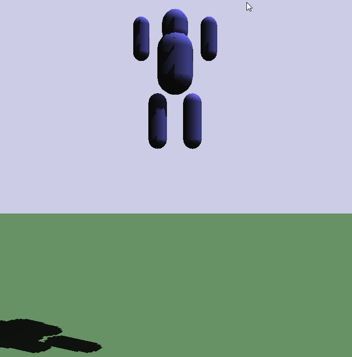
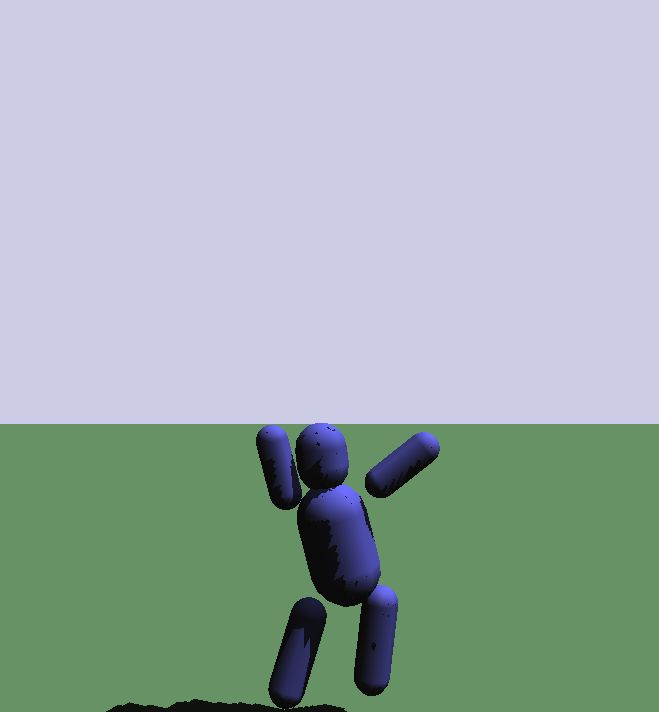

5関節のラグドールの例
戻る